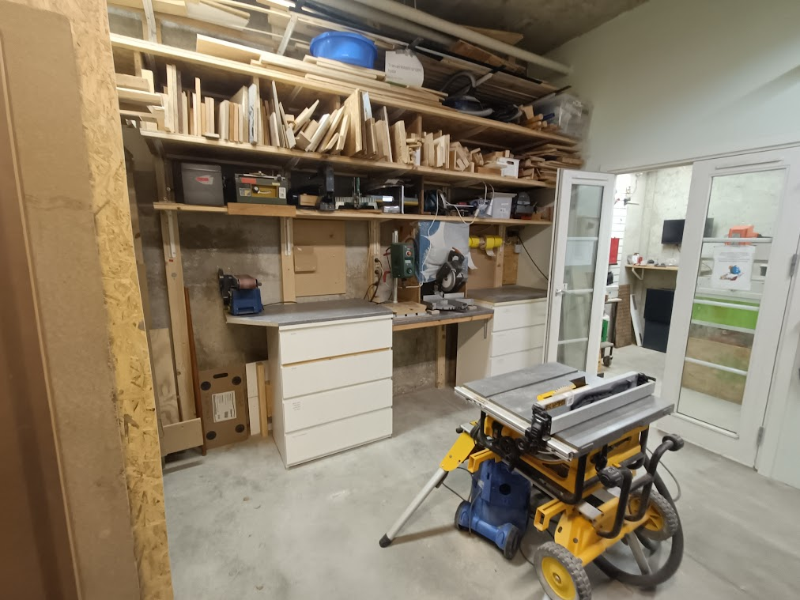
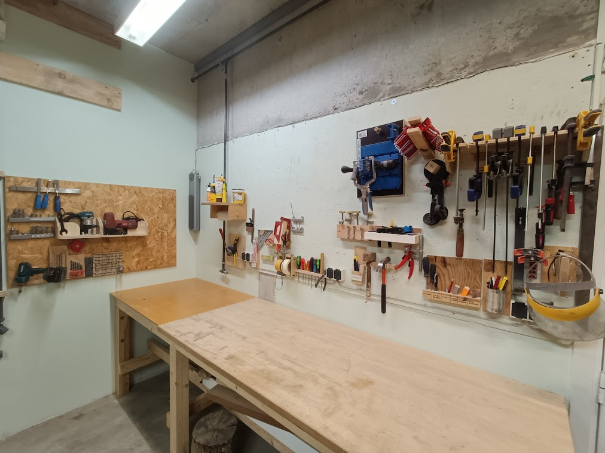

I Open Space Aarhus' træværksted har du mulighed for at lave dine projekter, som involverer træarbejde, uanset om det er fuglehuse, skærebrætter, møbler eller noget helt tredje. I træværkstedet vil du finde diverse værktøj og maskiner til at hjælpe med dette. Et udvalg ses i listen nedenfor:
- Bordrundsav
- Båndsav
- Kapsav
- Båndsliber
- Dekupørsav
- Diverse håndværktøj osv.

